Сначала — собственный визуальный язык
KAWS редко работает с брендом по принципу «вот готовый продукт, давайте нанесём на него моего персонажа». Его коллаборации устроены сложнее: художник берёт уже существующий объект, визуальный код или культурный символ и пытается понять, что в нём можно переработать, не уничтожив его исходную узнаваемость. Сам художник объяснял, что выбирает коллаборации не столько из коммерческих соображений, сколько из «personal taste and instinct» — личного вкуса и интуиции. При этом проект должен совпадать с тем, чем он занимается в данный момент. Чтобы такой подход вообще работал, KAWS построил крайне компактную систему визуальных элементов. COMPANION, CHUM, BFF, череп, перекрещенные глаза, руки в перчатках, двойные X, округлые формы, яркие цветовые поля — это не набор случайных персонажей. Это скорее конструктор, который можно переносить между разными поверхностями и масштабами. Один и тот же визуальный язык способен стать графикой на футболке, паттерном на куртке, вышивкой, скульптурой, виниловой игрушкой или частью архитектурной инсталляции.
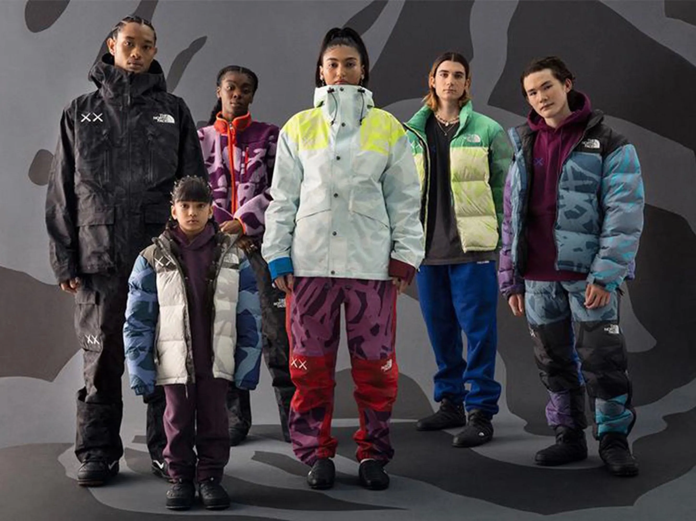
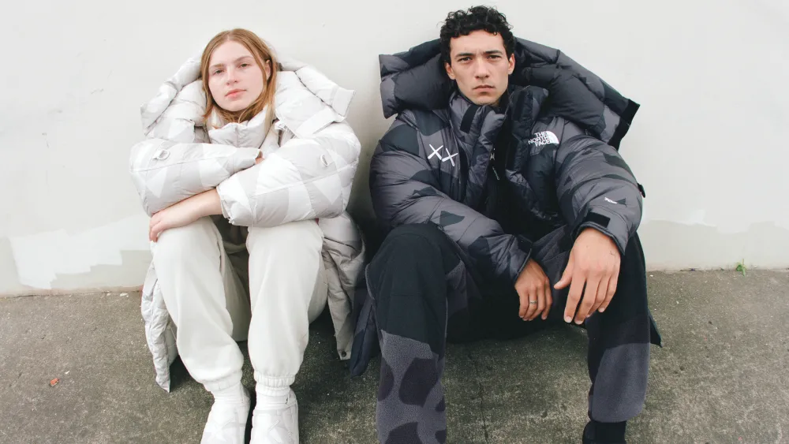
Одежда — не постер, а поверхность конструкции
Хороший пример — коллаборация KAWS с The North Face. Вместо того чтобы просто напечатать Companion поверх готовой куртки, команда начала с архивных силуэтов: Nuptse, Mountain Jacket, Basecamp и других знаковых моделей. KAWS работал с существующей конструкцией одежды, используя панели, швы и цветовые блоки как элементы собственной композиции. Сам KAWS довольно точно описал этот процесс: конструкция, прострочка и детали курток «lent themselves to the way I structure a painting» — позволяли ему мыслить одеждой примерно так же, как он строит картину. При этом первоначальным материалом были даже не готовые принты, а цветовые схемы: художник сначала предоставил изображения с точками, обозначающими цвет для отдельных частей одежды. То есть он начинал работу не с украшения поверхности, а с структуры распределения цвета.
«Коммерческая работа для меня должна попадать в параметры моей текущей практики, а не воспроизводить то, что я делал десять лет назад. Мне интересно, что одежда позволяет говорить с человеком иначе, чем живопись или скульптура»
KAWS
Художник
С Jordan и Dior: разная степень вмешательства
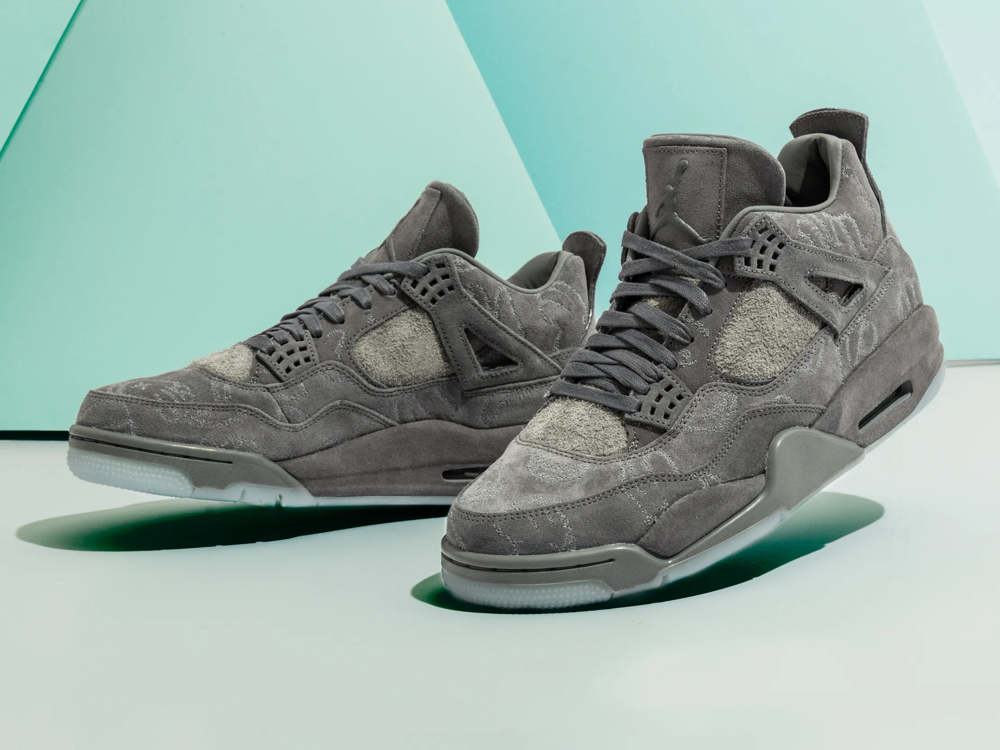
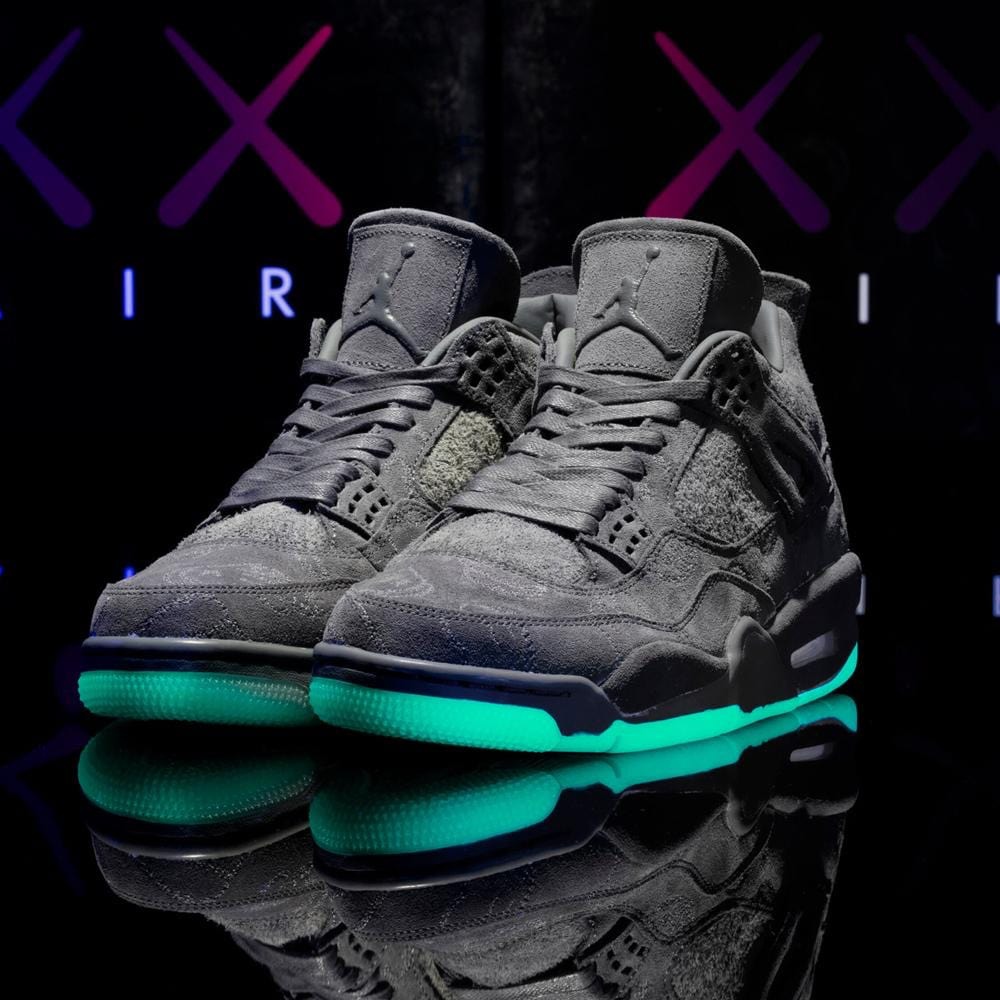
В случае Nike и Air Jordan IV метод другой. Вместо яркого превращения продукта в поп-арт объект KAWS сознательно пошёл на более сдержанное решение. В интервью Hypebeast он объяснял, что хотел сделать обувь, которую смог бы сам носить, и говорил о желании создать «a good object». Поэтому Air Jordan IV не превращается в огромную иллюстрацию KAWS. Его вмешательство сосредоточено в материалах, фактуре, цвете и небольших, но характерных деталях: серый замшевый верх, изменённые элементы подошвы, Х-образные мотивы и графика, встроенная непосредственно в конструкцию модели. Это почти противоположный The North Face сценарий: там KAWS активно раскладывает вещь на цветовые плоскости, здесь он сдерживает собственную графику, чтобы дизайн самого объекта остался главным.
Dior показывает ещё один уровень коллаборации. Для первого мужского шоу Kim Jones в Dior KAWS переосмыслил один из главных символов дома — пчелу. Мотив был встроен в одежду и аксессуары, а визуальный язык художника оказался частью самого фирменного кода Dior. Одновременно KAWS создал масштабную скульптуру BFF для пространства шоу: фигура была выполнена из примерно 70 000 роз и пионов. KAWS не просто добавляет свой знак к логотипу Dior. Он заставляет сам логотип пройти через собственную систему форм.
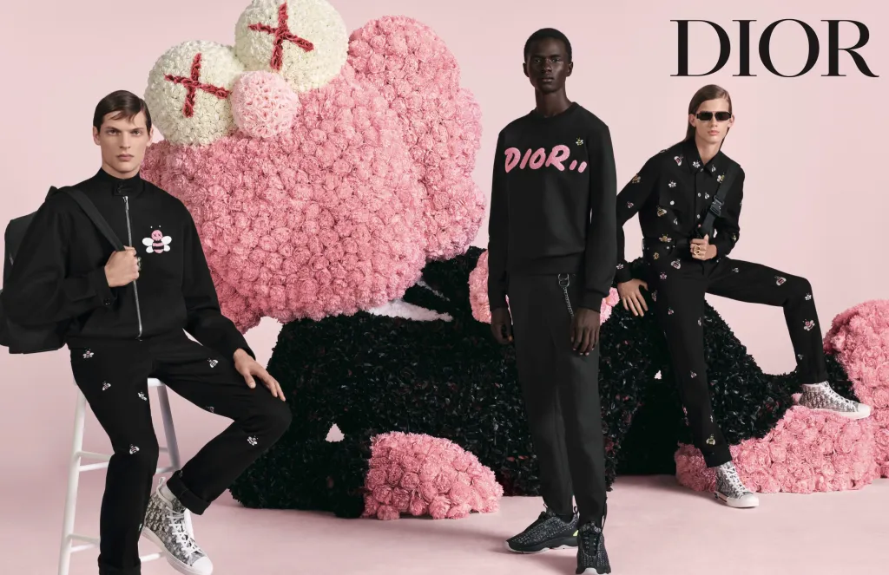
«Мне интересна возможность попасть к аудитории, которая не может покупать скульптуры и галерейные объекты»
KAWS
Художник
Hennessy и Uniqlo: система работает в любом медиуме
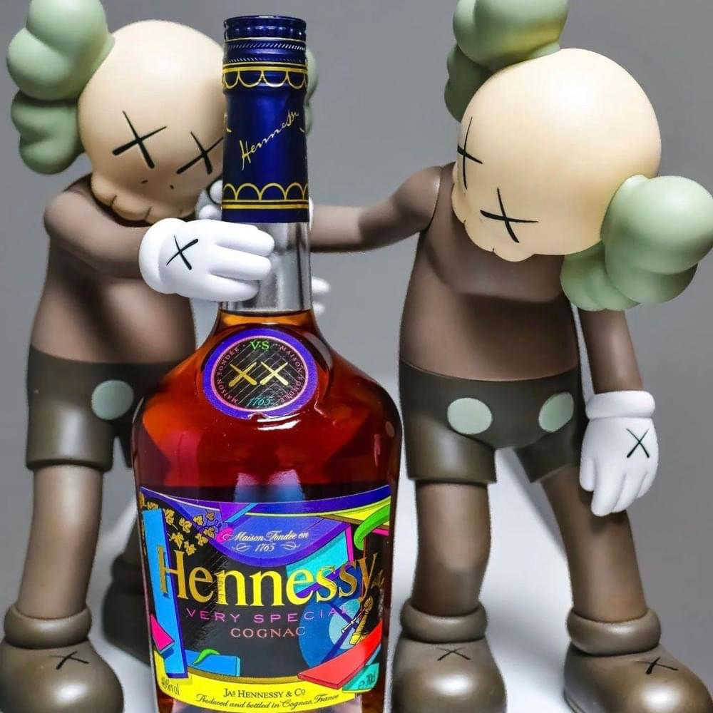
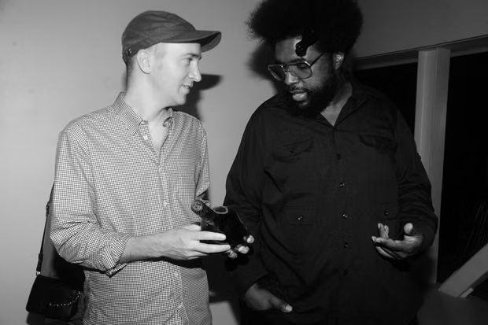
С бутылкой Hennessy KAWS делает то же самое, но в совершенно другом медиуме. В 2011 году художник получил возможность переработать классическую бутылку Hennessy V.S. Для работы он изучал историю марки, производство, визуальные элементы бренда и даже традицию написания названия Hennessy. В итоговом дизайне появились насыщенные цвета, двойной X и переработанные элементы герба и виноградной символики. Опять работает та же схема: изучить собственный язык бренда, найти его материальные и графические особенности, пропустить их через язык KAWS.
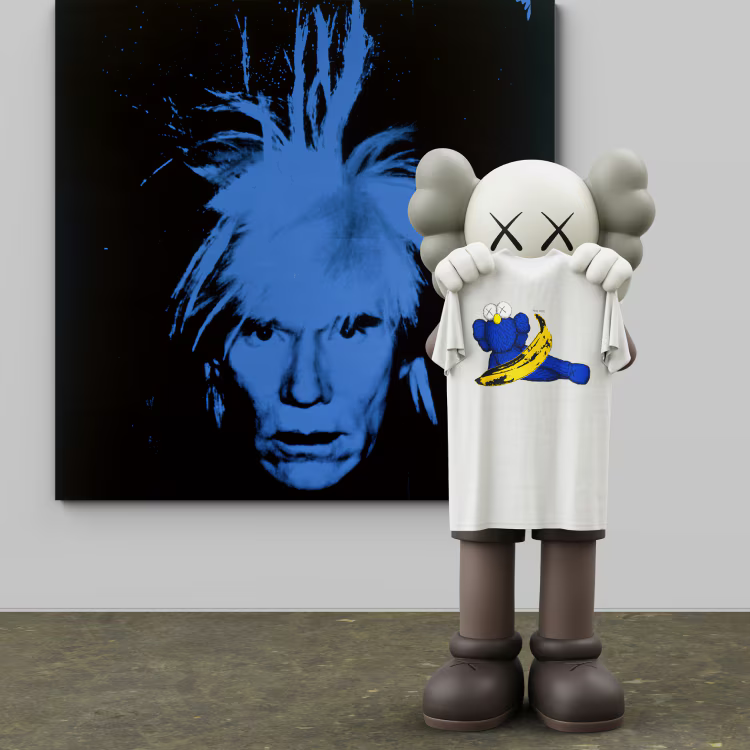
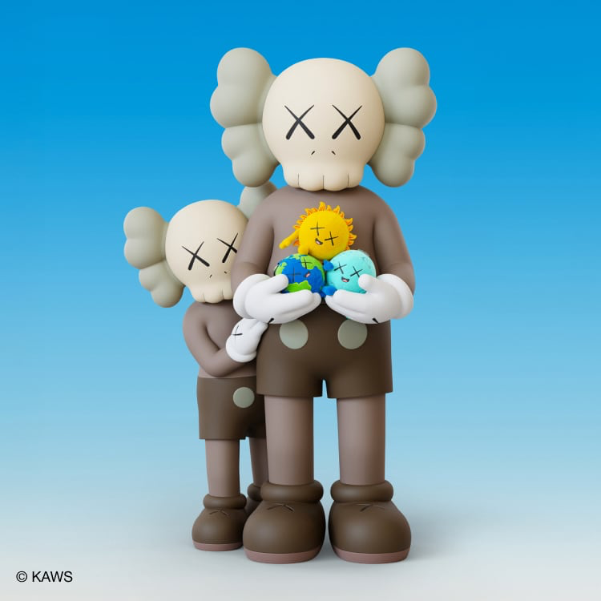
Если Dior позволяет работать со всем пространством бренда, то Uniqlo требует другой стратегии — сделать художественный язык максимально простым и масштабируемым. В первой большой коллаборации появились футболки, сумки и домашняя обувь. Сам художник говорил, что сознательно выбрал именно базовые вещи. X превращается в повторяющийся паттерн, Companion становится центральным изображением. Футболка для него — ещё один способ распространения изображения. В 2024 году KAWS работал с Uniqlo и Andy Warhol — не поверх произведений Warhol, а рядом с ними. Он специально подчёркивал, что не хотел вмешиваться в чужие изображения без возможности самого Warhol участвовать в процессе. Не случайно в 2025 году Uniqlo назначил KAWS своим первым Artist in Residence.
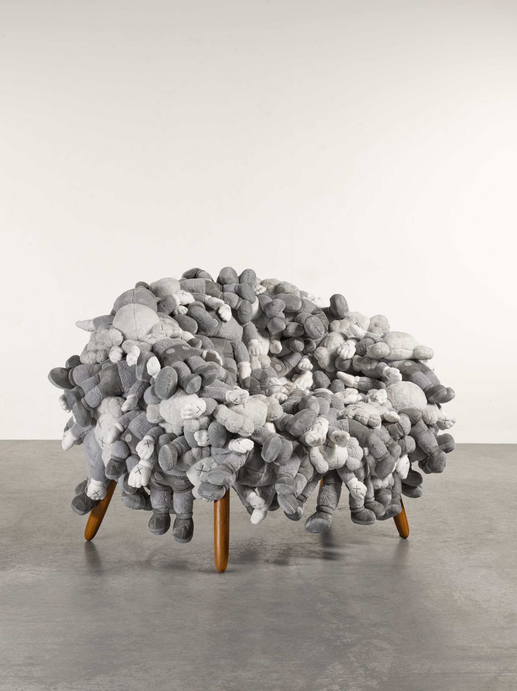
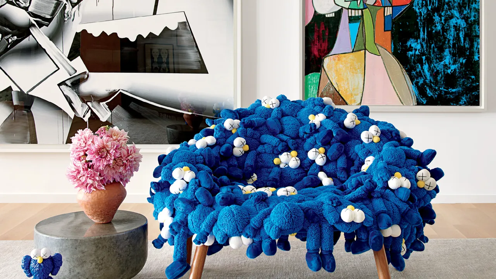
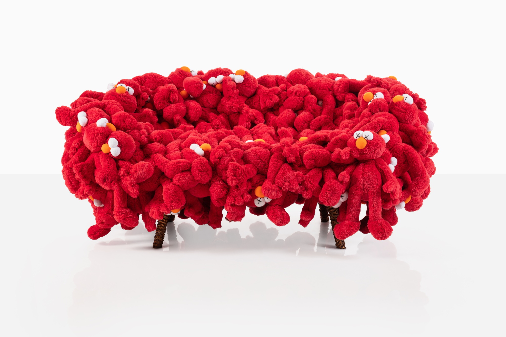
Если посмотреть на проекты KAWS вместе, оказывается, что его главное преимущество — не персонаж сам по себе. Это способность переводить один визуальный язык между медиумами. На футболке он становится графикой. На куртке — системой цветовых блоков и панелей. На кроссовке — материалом, фактурой и деталями. На бутылке — упаковкой и переосмыслением фирменных символов. В Dior — сценографией, одеждой, скульптурой и образом коллекции. В мебели — физическим объектом: например, в совместной работе с Campana Brothers мягкие KAWS toys были буквально встроены в конструкцию кресел и диванов. А в public art масштаб его персонажей расширяется уже до архитектурной среды.
Что именно KAWS приносит бренду
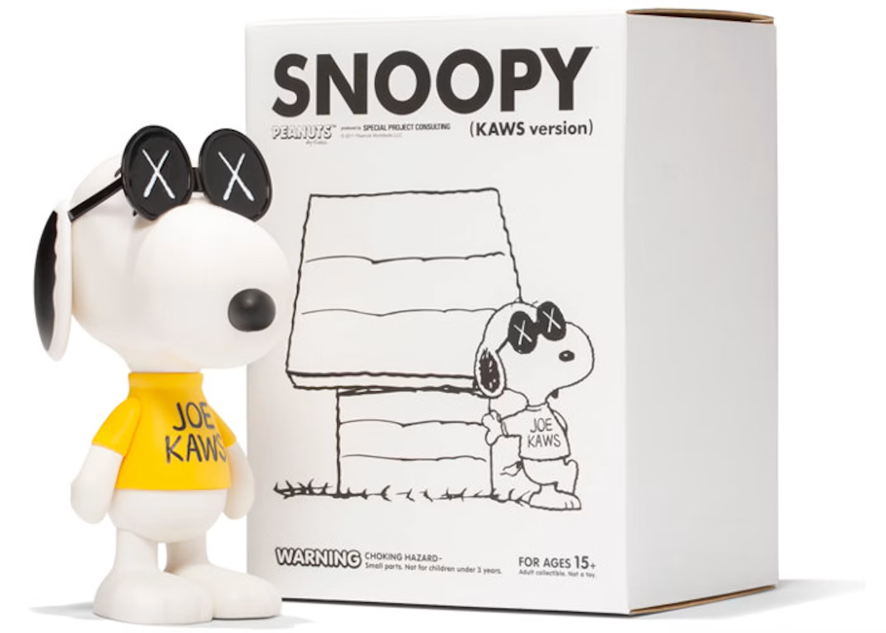
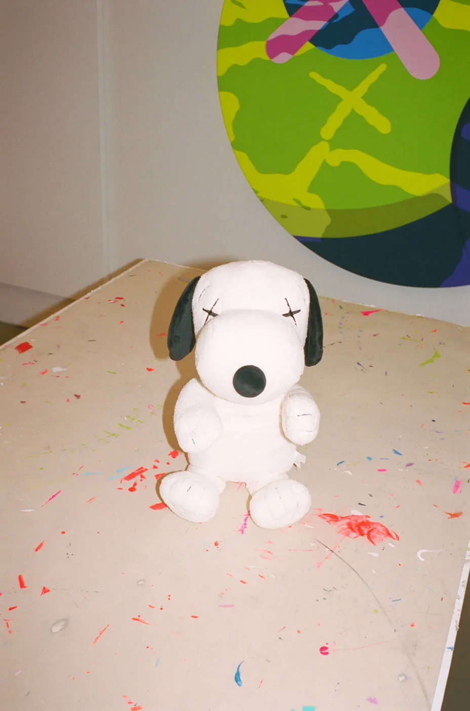
Если убрать весь hype вокруг его имени, метод можно свести к четырём операциям. Он берёт узнаваемый объект — не абстрактную футболку, а конкретную модель. Разбирает его визуальный код: форма, цвет, логотип, конструкция, материал, исторический символ. Пропускает это через ограниченный собственный язык: X, персонажи, округлые формы, цветовые поля, графические паттерны, деформация знака. И возвращает объект обратно бренду уже изменённым, но всё ещё узнаваемым.
Вывод
В случае KAWS коллаборация — это не нанесение авторского изображения на чужой продукт. Это временное соединение двух визуальных систем, где продукт бренда становится материалом для искусства, а язык художника — способом заново прочитать этот продукт. Он работает не только на поверхности продукта, но и с самим способом, которым продукт выглядит и функционирует. KAWS начинал с того, что вмешивался в рекламу. Потом научился превращать одежду, игрушки и упаковку в медиум. А дальше сам бренд становится пространством, внутри которого художник может работать.
Читайте также: